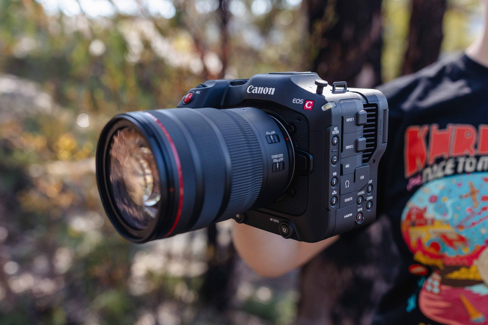

Sigma's newest full-frame lens is a macro,
built for mirrorless systems. The 105mm F2.8
DG DN Macro Art comes in a classic focal length
for macro work, and focuses close enough to project
subjects onto your camera's sensor at life-size—a
boon for getting the most detail out of really tiny
subjects. The lens sports a fresh optical formula,
designed specifically for mirrorless systems.
It's being sold it in two versions—E-mount for Sony
and L-mount for cameras from Leica, Panasonic,
and Sigma. As you'd expect, the 105mm Macro is
protected from dust and splashes, just like most
full-frame camera systems. It doesn't include
stabilization, but many compatible cameras offer
in-body stabilization, and macro work is often done
with the aid of a tripod.
It's an important lens for
L-mount owners—it's the first purpose built macro lens
for the system—and E-mount owners can look at it as a
more affordable alternative to the Sony FE 90mm Macro.
If you're an L-mount owner, you can pair a compatible
teleconverter to extend the focal length and net photos
with larger than life-size magnification. Other features
include hypersonic autofocus motors—macro lenses aren't
well known as fast focusers, but Sigma promises quiet,
quick focus here. There's a focus limiter switch too,
so you can prevent the lens from looking for distant
subjects when photographing close-up, or vice versa,
as well as an aperture ring that can operate with or
without detent clicks. We've not yet had a chance to
test the 105mm Macro F2.8 DG DN Macro Art, but Sigma
tells us to expect the lens soon—it's going to go on
sale to customers in October, with a $799 asking price,
very reasonable when compared with similar options for other
camera systems.